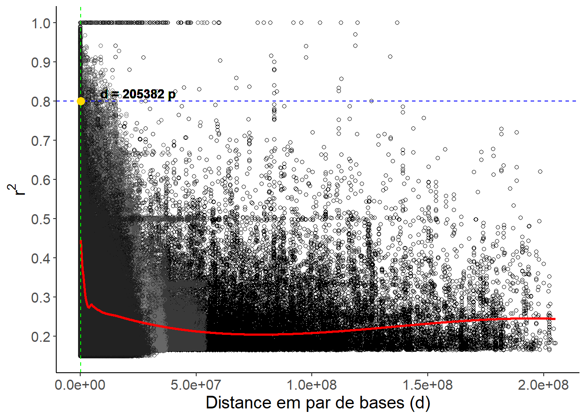
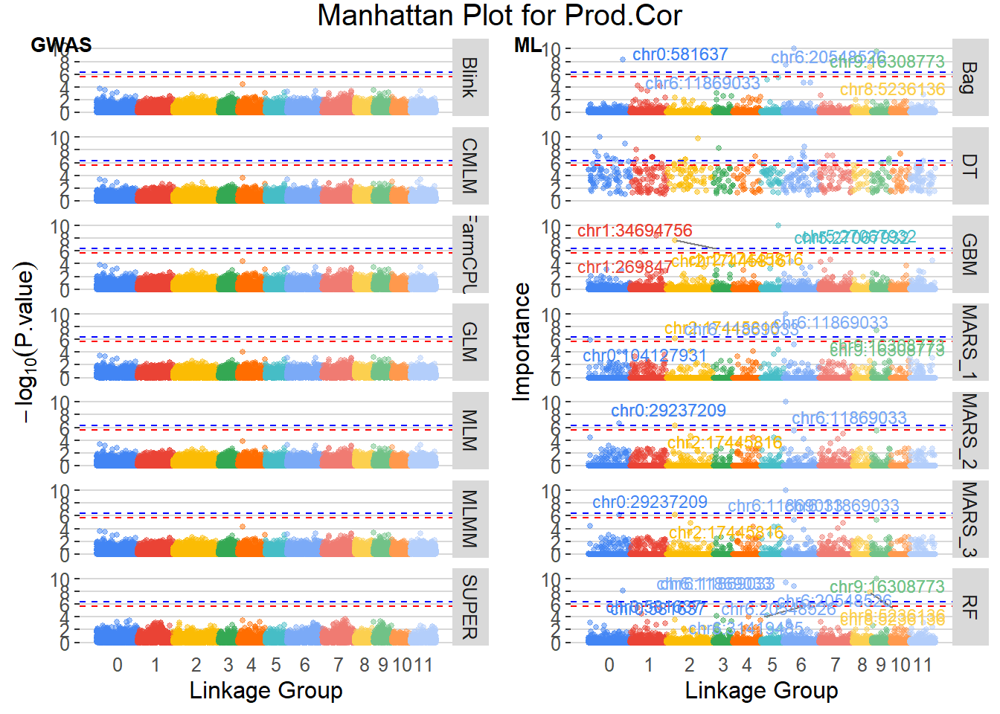
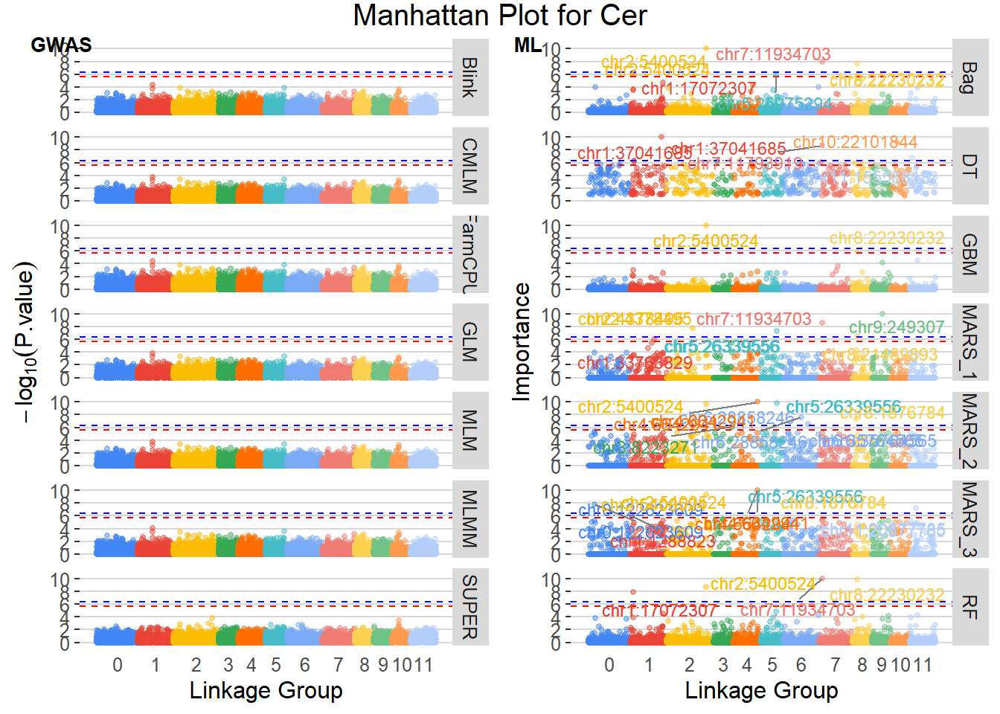
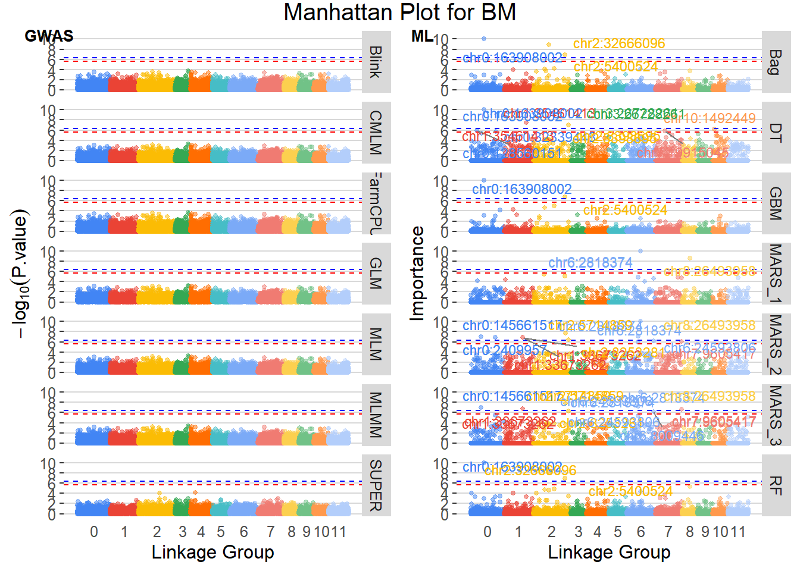

Last updated: 2025-07-29
Checks: 6 1
Knit directory:
Machine-learning-e-redes-neurais-artificiais-no-melhoramento-genetico-do-cafeeiro/
This reproducible R Markdown analysis was created with workflowr (version 1.7.1). The Checks tab describes the reproducibility checks that were applied when the results were created. The Past versions tab lists the development history.
The R Markdown file has unstaged changes. To know which version of
the R Markdown file created these results, you’ll want to first commit
it to the Git repo. If you’re still working on the analysis, you can
ignore this warning. When you’re finished, you can run
wflow_publish to commit the R Markdown file and build the
HTML.
Great job! The global environment was empty. Objects defined in the global environment can affect the analysis in your R Markdown file in unknown ways. For reproduciblity it’s best to always run the code in an empty environment.
The command set.seed(20250709) was run prior to running
the code in the R Markdown file. Setting a seed ensures that any results
that rely on randomness, e.g. subsampling or permutations, are
reproducible.
Great job! Recording the operating system, R version, and package versions is critical for reproducibility.
Nice! There were no cached chunks for this analysis, so you can be confident that you successfully produced the results during this run.
Great job! Using relative paths to the files within your workflowr project makes it easier to run your code on other machines.
Great! You are using Git for version control. Tracking code development and connecting the code version to the results is critical for reproducibility.
The results in this page were generated with repository version 5170a29. See the Past versions tab to see a history of the changes made to the R Markdown and HTML files.
Note that you need to be careful to ensure that all relevant files for
the analysis have been committed to Git prior to generating the results
(you can use wflow_publish or
wflow_git_commit). workflowr only checks the R Markdown
file, but you know if there are other scripts or data files that it
depends on. Below is the status of the Git repository when the results
were generated:
Ignored files:
Ignored: .Rproj.user/
Ignored: analysis/figure/
Ignored: analysis/modelos_mistos_dados_reais.Rmd
Ignored: data/dados_reais/Fenótipos 2014_2015_2016_C.arabica (1).xlsx
Ignored: data/dados_reais/Fenótipos 2014_2015_2016_C.arabica.xlsx
Ignored: data/dados_reais/FiltStep1_minQ10.0_minDP3_DPrange15-maxMeanDepth750_miss0.4_maf0.01_mac1_EMB_291701_SNPs_Raw.vcf.012.012
Ignored: data/dados_reais/FiltStep1_minQ10.0_minDP3_DPrange15-maxMeanDepth750_miss0.4_maf0.01_mac1_EMB_291701_SNPs_Raw.vcf.012.012.indv
Ignored: data/dados_reais/FiltStep1_minQ10.0_minDP3_DPrange15-maxMeanDepth750_miss0.4_maf0.01_mac1_EMB_291701_SNPs_Raw.vcf.012.012.pos
Ignored: data/dados_reais/FiltStep1_minQ10_minDP3_DPrange15-750_miss0.4_maf0.01_mac1_EMB_291701_filt1_snps_RAW.012.indv.txt
Ignored: data/dados_reais/FiltStep1_minQ10_minDP3_DPrange15-750_miss0.4_maf0.01_mac1_EMB_291701_filt1_snps_RAW.012.pos.txt
Ignored: data/dados_reais/FiltStep1_minQ10_minDP3_DPrange15-750_miss0.4_maf0.01_mac1_EMB_291701_filt1_snps_RAW.012.txt
Ignored: data/dados_reais/fpls-09-01934.pdf
Ignored: data/dados_reais/plants-13-01876-v2.pdf
Ignored: output/BLUPS_par_mmer.Rdata
Ignored: output/blups_all_wide.csv
Ignored: output/gwas_combined_results.rds
Ignored: output/gwas_results.rds
Ignored: output/importance_ML.rds
Ignored: output/importance_ML_mean.rds
Ignored: output/manhattan_BM.tiff
Ignored: output/manhattan_Cer.tiff
Ignored: output/manhattan_Prod.Cor.tiff
Ignored: output/mean_pheno.csv
Ignored: output/mod.RDS
Ignored: output/plot_lddecay.Rda
Ignored: output/pred_mod.RDS
Ignored: output/real_lddecay.tiff
Ignored: output/real_results_consolidated_10r_3f.xlsx
Ignored: output/real_results_consolidated_5r_5f.xlsx
Ignored: output/res.RDS
Ignored: output/result_sommer_pl_geracao_random.RDS
Ignored: output/result_sommer_random.RDS
Ignored: output/results_cv_GBLUP_a.rds
Ignored: output/results_cv_GBLUP_ad.rds
Ignored: output/results_cv_GBLUP_ade.rds
Ignored: output/simulated_results_consolidated.xlsx
Unstaged changes:
Modified: analysis/gwas_dados_reais.Rmd
Modified: analysis/gwas_dados_simulados.Rmd
Modified: analysis/gws_dados_reais.Rmd
Modified: analysis/gws_dados_simulados.Rmd
Modified: analysis/license.Rmd
Note that any generated files, e.g. HTML, png, CSS, etc., are not included in this status report because it is ok for generated content to have uncommitted changes.
These are the previous versions of the repository in which changes were
made to the R Markdown (analysis/gwas_dados_reais.Rmd) and
HTML (docs/gwas_dados_reais.html) files. If you’ve
configured a remote Git repository (see ?wflow_git_remote),
click on the hyperlinks in the table below to view the files as they
were in that past version.
| File | Version | Author | Date | Message |
|---|---|---|---|---|
| html | ce1b0cf | WevertonGomesCosta | 2025-07-28 | update gwas_dados_reais .html |
| Rmd | 7d520e5 | WevertonGomesCosta | 2025-07-28 | add library(kableExtra) # Para tabelas in gwas_dados_reais .Rmd |
| html | b712227 | WevertonGomesCosta | 2025-07-28 | update gwas_dados_reais .html |
| Rmd | 53197b5 | WevertonGomesCosta | 2025-07-28 | update figures gwas_dados_reais |
| Rmd | daec54d | WevertonGomesCosta | 2025-07-28 | add gwas_dados_reais .rmd and .html |
| html | daec54d | WevertonGomesCosta | 2025-07-28 | add gwas_dados_reais .rmd and .html |
| Rmd | 76b5e77 | WevertonGomesCosta | 2025-07-28 | add scripts .Rmd to gws and gwas for real and simulated data |
| Rmd | f8be55a | WevertonGomesCosta | 2025-07-24 | add gws and gwas_dados_reais.Rmd |
Este script realiza uma análise de associação genômica ampla (GWAS) utilizando o pacote GAPIT em R. Ele carrega dados fenotípicos e genotípicos reais, prepara os dados para análise e executa modelos de GWAS para cada combinação de traço e modelo especificado. Os resultados são salvos em um arquivo RDS.
library(kableExtra) # Para tabelas
library(GAPIT) # Para análise de associação genômica ampla (GWAS)
library(sommer) # Para modelos mistos e análise de variância
library(tidyverse) # Para manipulação de dados
library(doParallel) # Para paralelização
library(foreach) # Para loops paralelos
library(ggrepel) # Para rótulos de texto em gráficos
library(ggthemes) # Para temas de gráficosOs dados fenotípicos e genotípicos são carregados a partir de arquivos RDS. Certifique-se de que os arquivos estão no diretório correto.
# Carrega os dados de genótipos e fenótipos
pheno <- readRDS(file = "data/dados_reais/pheno_real.rds")
head(pheno)# A tibble: 6 × 5
ID Prod.Cor Cer BM genotipo
<dbl> <dbl> <dbl> <dbl> <chr>
1 1 6.37 1.76 2.00 PROG 1_1
2 10 3.45 1.73 2.35 PROG 1_10
3 11 7.03 2.33 2.02 PROG 1_11
4 12 -1.65 1.75 1.04 PROG 1_12
5 13 -0.350 1.75 1.04 PROG 1_13
6 14 10.3 3.14 2.44 PROG 1_14 CAonly_Contig15745:814-1134:165 CAonly_Contig2698:0-267:74
PROG 1_1 0 0
PROG 1_10 -1 0
PROG 1_11 -1 0
PROG 1_12 -1 0
PROG 1_13 -1 0
CAonly_Contig2698:0-267:88 CAonly_Contig2698:0-267:110
PROG 1_1 0 0
PROG 1_10 0 0
PROG 1_11 0 0
PROG 1_12 0 0
PROG 1_13 0 0
CAonly_Contig2698:0-267:125
PROG 1_1 -1
PROG 1_10 -1
PROG 1_11 -1
PROG 1_12 0
PROG 1_13 -1 V1 V2 pos n_markers
1 CAonly_Contig15745:814-1134 165 CAonly_Contig15745:814-1134:165 1
2 CAonly_Contig2698:0-267 74 CAonly_Contig2698:0-267:74 2
3 CAonly_Contig2698:0-267 88 CAonly_Contig2698:0-267:88 3
4 CAonly_Contig2698:0-267 110 CAonly_Contig2698:0-267:110 4
5 CAonly_Contig2698:0-267 125 CAonly_Contig2698:0-267:125 5
6 CAonly_Contig2698:0-267 150 CAonly_Contig2698:0-267:150 6Precisamos garantir que os dados fenotípicos e genotípicos estejam no formato correto para a análise. Isso inclui a conversão de colunas para tipos numéricos e a criação de identificadores únicos.
# 1) Certifique‑se de que o seu data.frame de fenótipos
# tem a coluna 'genotipo' e depois só colunas numéricas:
pheno <- pheno %>%
# transforma tudo, exceto 'genotipo', em numeric
mutate(across(-genotipo, ~ as.numeric(as.character(.))))
# 2) Mesma ideia para geno
geno <- geno %>%
mutate(across(where(is.numeric), as.integer))
# 3) Cria GD com ID e seleciona as colunas de genótipo
GD <- geno %>%
# 1) Cria a coluna ID
mutate(ID = rownames(geno)) %>%
# 2) Seleciona apenas ID + todas as colunas cujo nome contém "chr"
select(ID, matches("chr"))
GD[1:5,1:5] ID chr0:24844 chr0:24881 chr0:24905 chr0:24916
PROG 1_1 PROG 1_1 0 0 0 -1
PROG 1_10 PROG 1_10 0 0 0 -1
PROG 1_11 PROG 1_11 0 0 0 -1
PROG 1_12 PROG 1_12 1 0 0 -1
PROG 1_13 PROG 1_13 1 -1 0 -1# 4) Prepare o GM
GM <- pos_geno %>%
mutate(
SNP = pos,
chr = as.integer(str_extract(V1, "\\d+")),
pos = V2
) %>%
select(SNP, chr, pos) %>%
distinct() %>%
filter(SNP %in% names(GD)) %>%
arrange(SNP)
head(GM) SNP chr pos
1 chr0:100000044 0 100000044
2 chr0:100000045 0 100000045
3 chr0:100000085 0 100000085
4 chr0:100000117 0 100000117
5 chr0:100000132 0 100000132
6 chr0:100677213 0 100677213Para realizar a análise de desequilíbrio de ligação (LD) entre os marcadores, precisamos preparar os dados genotípicos e o mapa de marcadores.
Converta os dados de genótipo para o formato de matriz e prepare o mapa de marcadores, garantindo que as colunas estejam no tipo correto.
# Convert genotype data to matrix format
# Remove the first column (ID) and convert to matrix
CPgeno <- as.matrix(GD[-1])
CPgeno[1:5,1:5] chr0:24844 chr0:24881 chr0:24905 chr0:24916 chr0:231736
PROG 1_1 0 0 0 -1 0
PROG 1_10 0 0 0 -1 0
PROG 1_11 0 0 0 -1 0
PROG 1_12 1 0 0 -1 0
PROG 1_13 1 -1 0 -1 0# Load and prepare map data
mapCP <- GM %>%
mutate(Locus = SNP, # Ensure SNP column is character type
Position = as.numeric(pos), # Ensure pos column is numeric type
LG = as.integer(chr) + 1) %>% # Ensure chr column is integer type
select(Locus, Position, LG) %>%
filter(Locus %in% colnames(CPgeno)) # Filter to include only markers present in CPgeno
head(mapCP) Locus Position LG
1 chr0:100000044 100000044 1
2 chr0:100000045 100000045 1
3 chr0:100000085 100000085 1
4 chr0:100000117 100000117 1
5 chr0:100000132 100000132 1
6 chr0:100677213 100677213 1Obtenha os grupos de ligação únicos e aplique uma função para
calcular o decaimento do LD para cada grupo de ligação. A função
LD.decay do pacote sommer é utilizada para
calcular o decaimento do LD.
[1] 1 2 3 4 5 6 7 8 9 10 11 12O objeto res contém os resultados do decaimento do LD
para cada grupo de ligação, filtrados por pares de marcadores
significativos após correção de Bonferroni.
res <- lapply(unique_LGs, function(lg) {
# Step 2a: For the current linkage group 'lg', extract the corresponding marker names
markers <- mapCP %>%
filter(LG == lg) %>% # Filter the map data to include only rows where LG equals the current linkage group
pull(Locus) # Extract the 'Locus' column, which contains marker names
# Step 2b: Perform Linkage Disequilibrium (LD) decay analysis on the genotype data for these markers
LDDecay <- LD.decay(CPgeno[, markers], # Subset the genotype matrix to include only the columns for the current markers
mapCP %>% filter(LG == lg)) # Subset the map data to include only the current linkage group
# Step 2c: Filter the LD results to include only significant marker pairs after Bonferroni correction
A <- LDDecay$all.LG %>% # Access the LD results for all marker pairs
filter(p < 0.05 / choose(length(markers), 2)) # Apply Bonferroni correction to adjust the p-value threshold
# Step 2d: Check if there are any significant marker pairs
if (nrow(A) > 0) {
# If significant pairs exist, create a data frame including the linkage group identifier
data.frame(GL = paste0("lg", lg), # Add a column 'GL' with the linkage group name (e.g., 'lg1', 'lg2', etc.)
A) # Include the filtered LD decay results
} else {
# If no significant pairs are found, return NULL for this linkage group
NULL
}
})
# Save res
saveRDS(res, "output/res.RDS")O objeto dados será o conjunto de dados final contendo
os resultados do decaimento do LD, com as colunas d
(distância entre os marcadores em par de bases) e r2
(coeficiente de determinação). A coluna GL indica o grupo
de ligação ao qual os marcadores pertencem.
res <- res[!sapply(res, is.null)]
dados <- do.call(rbind, res)
dados$GL <- as.factor(dados$GL)
head(dados) GL d r2 p
1 lg1 0 1.0000000 0.000000e+00
2 lg1 1 0.7731250 0.000000e+00
3 lg1 0 1.0000000 0.000000e+00
4 lg1 41 0.3454594 2.220446e-16
5 lg1 40 0.3476557 2.220446e-16
6 lg1 0 1.0000000 0.000000e+00Ajuste o modelo de perda de LD usando uma regressão local (loess) para prever o decaimento do LD em função da distância entre os marcadores.
Prepare uma sequência de distâncias para prever o decaimento do LD
usando o modelo ajustado. A sequência é criada com base nos valores
mínimos e máximos de distância (d) encontrados nos
dados.
# Usa grid reduzido para evitar alocação grande
n_points <- 1000
d_min <- min(dados$d)
d_max <- max(dados$d)
d_seq <- seq(d_min, d_max, length.out = n_points)[-1]Preveja o decaimento do LD usando o modelo ajustado e salve os
resultados em um arquivo RDS. O objeto data_pred conterá as
distâncias e as previsões correspondentes.
pred <- predict(mod, d_seq)
data_pred <- data.frame(d = d_seq, pred = pred)
head(data_pred)
saveRDS(data_pred, file = "output/pred_mod.RDS")Encontre a distância mais próxima do valor alvo de r² (0.8) e
armazena essa distância em closest_d. A função
which.min é utilizada para encontrar o índice da distância
mais próxima.
target_r2 <- 0.8
closest_index <- which.min(abs(data_pred$pred - target_r2))
closest_d <- d_seq[closest_index]
closest_d[1] 205381.6Utilize o ggplot2 para criar um gráfico do decaimento do
LD, incluindo os pontos de dados originais, a linha de ajuste do modelo
loess e as linhas verticais e horizontais para destacar o valor alvo de
r² e a distância correspondente.
# Create the plot with additional adjustments
color_palette <- colorRampPalette(c('black', 'gray50'))
# Plot the data with the fitted loess model and target r² line
p <- ggplot(dados, aes(x = d, y = r2, colour = GL)) +
geom_point(pch = 21, show.legend = FALSE) +
geom_line(
data = data_pred,
aes(x = d, y = pred),
colour = 'red',
linewidth = 1
) +
geom_hline(yintercept = target_r2,
linetype = "dashed",
color = "blue") +
geom_vline(xintercept = closest_d,
linetype = "dashed",
color = "green") +
geom_point(
aes(x = closest_d, y = target_r2),
data = NULL,
color = "gold",
size = 3
) +
scale_color_manual(values = color_palette(length(unique(dados$GL)))) +
scale_y_continuous(breaks = seq(0, 1, by = 0.1)) +
labs(x = "Distance em par de bases (d)", y = expression(r^2)) +
theme_classic() +
theme(text = element_text(size = 15))
# Add text annotation for the closest distance and target r²
p <- p +
geom_text(
aes(
x = 2.5e7,
y = target_r2,
label = paste("d =", round(closest_d, 0), "p")
),
data = NULL,
nudge_y = 0.02,
color = "black",
fontface = "bold"
)
print(p)
| Version | Author | Date |
|---|---|---|
| 56af9ab | WevertonGomesCosta | 2025-07-28 |
Definimos um limiar de LD de 0.8 e obtivemos que a distância de decaimento é aproximadamente 2.0538156^{5}, em par de bases.
Os modelos GAPIT a serem avaliados são definidos, e os dados fenotípicos e genotípicos são preparados para a análise de associação genômica ampla (GWAS).
Os modelos GLM (General Linear Model), MLM (Mixed Linear Model), CMLM (Compressed Mixed Linear Model), MLMM (Multi-Locus Mixed Model), SUPER (SNP Unbiased Epistatic Regression), FarmCPU (Fixed and Random Model Circulating Probability Unification) e Blink (Bayesian Linear Regression) são utilizados para realizar a análise de associação genômica. O GAPIT é um pacote amplamente utilizado em estudos de GWAS, pois permite a análise eficiente de grandes conjuntos de dados genômicos e fenotípicos.
# Definir modelos do GAPIT a serem avaliados
models_gwas <- c("GLM", "MLM", "CMLM", "MLMM", "SUPER", "FarmCPU", "Blink")Para executar a análise de GWAS em paralelo, utilizamos o pacote
doParallel para configurar um cluster que permite a
execução simultânea de múltiplas análises. Isso acelera
significativamente o processo, especialmente quando lidamos com grandes
conjuntos de dados e múltiplos modelos.
O objeto results_cv_GAPIT armazenará os resultados de
todas as análises de GWAS, organizados por trait e modelo. Cada iteração
do loop executa o GAPIT para uma combinação específica de trait e
modelo, prepara os dados fenotípicos e genotípicos, e extrai os
resultados da análise.
# Configuração do cluster para paralelização (usa todos os núcleos menos um)
numCores <- max(1, parallel::detectCores() - 1)
cl <- makeCluster(numCores)
registerDoParallel(cl)
# Criar combinações de traits e modelos
combos <- expand.grid(trait = traits,
model = models_gwas,
stringsAsFactors = FALSE) %>% as_tibble()
# Loop paralelo: executar GAPIT para cada combinação
results_cv_GAPIT <- foreach(
idx = seq_len(nrow(combos)),
.packages = c("GAPIT", "dplyr", "tibble"),
.combine = bind_rows
) %dopar% {
# Identificar trait e modelo
trait_name <- combos$trait[idx]
model_name <- combos$model[idx]
# Preparar Y: converte fenótipo para numérico
Y <- pheno %>%
select(genotipo, all_of(trait_name)) %>%
rename(ID = genotipo) %>%
mutate(across(-ID, ~ as.numeric(as.character(.)))) %>%
as.data.frame()
# Executar modelo GAPIT sem gerar arquivos de saída
fit <- GAPIT(
Y = Y,
GD = GD,
GM = GM,
model = model_name,
file.output = FALSE
)
# Extrair resultados GWAS e padronizar tipos
gwas <- as_tibble(fit$GWAS) %>%
mutate(across(.cols = -SNP, .fns = ~ if (is.character(.x)) {
suppressWarnings(as.numeric(.x))
} else {
.x
}))
# Ajustar nomes de colunas conforme modelo
if (model_name %in% c("MLMM", "FarmCPU")) {
colnames(gwas) <- c("SNP",
"Chromosome",
"Position ",
"P.value",
"maf",
"nobs",
"effect")
}
if (model_name %in% c("Blink")) {
colnames(gwas) <- c("SNP",
"Chromosome",
"Position ",
"P.value",
"nobs",
"effect",
"maf")
}
# Adicionar metadados de trait e modelo
gwas %>%
mutate(trait = trait_name, model = model_name) %>%
select(trait, model, everything())
}
# Encerrar o cluster
stopCluster(cl)
# Salvar resultados
saveRDS(results_cv_GAPIT, file = "output/gwas_results.rds")Para calcular a importância dos marcadores SNP nos modelos de machine learning, utilizamos os resultados de validação cruzada (CV) de cada modelo obtidos pelo script de GWS no passo anterior.
A função flatten_importance é responsável por ler os
arquivos de resultados, extrair as importâncias e adicionar metadados
relevantes como Trait, Rep, Fold e model.
flatten_importance <- function(path, model_name) {
readRDS(path) %>%
# injeta nos próprios dfs de imp: Trait, Rep, Fold e model
mutate(
imp = pmap(
list(imp, Trait, Rep, Fold),
~ .x %>%
mutate(
Trait = ..2,
Rep = ..3,
Fold = ..4,
model = model_name
)
)
) %>%
# mantém só a lista imp (já com metadados) e desaninha tudo
select(imp) %>%
unnest(cols = imp)
}
# Vetores de arquivos e nomes
models_ML <- c("MARS_1", "MARS_2", "MARS_3", "DT", "Bag", "RF", "GBM")
paths <- paste0("output/real_results_cv_", models_ML, ".rds")
# Combina todas as tabelas num único data.frame
imp_ML <- map2_dfr(paths, models_ML, flatten_importance)
# Salvar resultados de importância
saveRDS(imp_ML, file = "output/importance_ML.rds")Como a importância dos SNPs foi calculada para cada repetição e fold, precisamos calcular a média dos efeitos dos SNPs por trait e modelo. Isso nos permitirá identificar quais SNPs são mais relevantes em geral, independentemente do modelo específico utilizado.
# Média dos efeitos dos SNPs por trait e modelo
imp_ML_mean <- imp_ML %>%
rename(effect = Overall) %>%
group_by(marker, Trait, model) %>%
summarise(effect = mean(effect, na.rm = TRUE), .groups = "drop") %>%
arrange(Trait, model, desc(effect))
# Renomear colunas para manter consistência
colnames(imp_ML_mean) <- c("SNP", "trait", "model", "effect")
# Salvar resultados de importância média
saveRDS(imp_ML_mean, file = "output/importance_ML_mean.rds")Para combinar os resultados de GWAS com a importância dos marcadores obtida pelos modelos de machine learning, unimos os dois conjuntos de dados. Isso nos permitirá analisar quais SNPs são significativos em termos estatísticos e também quais têm maior importância preditiva nos modelos de machine learning.
Os resultados combinados de efeitos dos marcadores devem ser processados para facilitar a visualização e interpretação. Isso inclui a extração de informações adicionais, como o cromossomo e a posição dos SNPs, e a normalização dos efeitos para cada trait e modelo.
results_combined <- results_combined %>%
mutate(Chr = str_split_i(SNP, ":", 1),
Chr = str_split_i(Chr, "chr",2),
Pos = str_split_i(SNP, ":", 2)
)Para facilitar a comparação entre os efeitos dos marcadores, normalizamos os valores de efeito para uma escala de 0 a 10. Isso ajuda a visualizar a importância relativa dos SNPs em diferentes traços e modelos.
Para associar os marcadores SNP às regiões do QTL, precisamos criar um índice contínuo para cada SNP, que será utilizado para plotar os resultados de forma ordenada. Isso nos permitirá visualizar a distribuição dos SNPs ao longo dos cromossomos e identificar as regiões de interesse.
Para cada modelo e trait, definimos um limiar de significância para identificar quais SNPs são considerados significativos. Utilizamos o método de correção de Bonferroni para ajustar os valores p, garantindo que os resultados sejam robustos e confiáveis. Adotamos um limiar de 0.05 e 0.01 para identificar SNPs significativos, permitindo uma análise mais rigorosa dos resultados.
Para os modelos GAPIT, utilizamos os valores de P.value, enquanto para os modelos de machine learning, utilizamos a importância dos efeitos dos SNPs. Os SNPs significativos são então armazenados em data frames separados para cada limiar de significância.
# Definindo o limiar de significância
alpha <- 0.05
n.markers <- length(unique(plot_data$SNP))
threshold_05 <- alpha / n.markers
alpha <- 0.01
n.markers <- length(unique(plot_data$SNP))
threshold_01 <- alpha / n.markers
# Filtrando resultados significativos
results_cv_GAPIT_sig_05 <- plot_data %>%
filter(model%in% models_gwas) %>%
filter(-log10(P.value) > -log10(threshold_01)) %>%
mutate(sig = paste(trait, SNP, sep = "_")) %>%
droplevels()
results_cv_GAPIT_sig_01 <- plot_data %>%
filter(model %in% models_gwas) %>%
filter(-log10(P.value) > -log10(threshold_01)) %>%
mutate(sig = paste(trait, SNP, sep = "_")) %>%
droplevels()
results_cv_imp_ml_sig_05 <- plot_data %>%
filter(model %in% models_ML) %>%
filter(effect_res > -log10(threshold_05)) %>%
mutate(sig = paste(trait, SNP, sep = "_")) %>%
droplevels()
results_cv_imp_ml_sig_01 <- plot_data %>%
filter(model %in% models_ML) %>%
filter(effect_res > -log10(threshold_01)) %>%
mutate(sig = paste(trait, SNP, sep = "_")) %>%
droplevels()O Manhattan plot é uma ferramenta visual poderosa para identificar SNPs significativos em estudos de GWAS. Ele exibe os valores -log10(P.value) dos SNPs ao longo dos cromossomos, permitindo a identificação rápida de regiões com associações genéticas significativas. Neste script, geramos Manhattan plots para cada trait, destacando os SNPs que superam os limiares de significância definidos.
for (i in traits) {
# Prepara dados básicos e índice
plotgwasall <- plot_data %>%
filter(trait == i, !is.na(Chr)) %>%
arrange(as.numeric(Chr), SNP) %>%
mutate(
Chr = factor(Chr, levels = as.character(0:11))
)
# Cria um índice para alocar o Chr ao longo do eixo x
axisdf <- plotgwasall %>%
group_by(Chr) %>%
summarise(center = (min(index) + max(index)) / 2, .groups = "drop") %>%
arrange(as.integer(as.character(Chr)))
# Paleta gdocs de 12 cores
gdocs <- gdocs_pal()(24)[-12]
# GWAS
figure_gwas <- plotgwasall %>%
filter(model %in% models_gwas) %>%
ggplot(aes(x = index, y = -log10(P.value), color = Chr)) +
geom_point(alpha = 0.5, size = 1) +
geom_hline(yintercept = -log10(threshold_05), linetype = "dashed", color = "red") +
geom_hline(yintercept = -log10(threshold_01), linetype = "dashed", color = "blue") +
scale_x_continuous(breaks = axisdf$center, labels = axisdf$Chr) +
scale_y_continuous(limits = c(0, 10*1.1), breaks = seq(0,10,2)) +
facet_wrap(model ~ ., ncol = 1, scales = "free_y", strip.position = "right") +
scale_color_manual(values = gdocs, drop = FALSE) +
theme_hc() + xlab("Linkage Group") + ylab(expression(-log[10](P.value))) +
theme(legend.position = "none", axis.ticks.x = element_blank(), panel.grid.major.x = element_blank())
# ML
figure_ML <- plotgwasall %>%
filter(model %in% models_ML) %>%
ggplot(aes(x = index, y = effect_res, color = Chr)) +
geom_point(alpha = 0.5, size = 1) +
geom_hline(yintercept = -log10(threshold_05), linetype = "dashed", color = "red") +
geom_hline(yintercept = -log10(threshold_01), linetype = "dashed", color = "blue") +
scale_x_continuous(breaks = axisdf$center, labels = axisdf$Chr) +
scale_y_continuous(limits = c(0, 10*1.1), breaks = seq(0,10,2)) +
facet_wrap(model ~ ., ncol = 1, scales = "free_y", strip.position = "right") +
scale_color_manual(values = gdocs, drop = FALSE) +
theme_hc() + xlab("Linkage Group") + ylab("Importance") +
theme(legend.position = "none", axis.ticks.x = element_blank(), panel.grid.major.x = element_blank())
# Anotações
figure_gwas <- figure_gwas +
geom_text_repel(data = results_cv_GAPIT_sig_05 %>% filter(trait == i),
aes(x = index, y = -log10(P.value), label = SNP),
size = 3, segment.color = "gray50", max.overlaps = 10) +
geom_text_repel(data = results_cv_GAPIT_sig_01 %>% filter(trait == i),
aes(x = index, y = -log10(P.value), label = SNP),
size = 3, segment.color = "gray50", max.overlaps = 10)
figure_ML <- figure_ML +
geom_text_repel(data = results_cv_imp_ml_sig_05 %>% filter(trait == i),
aes(x = index, y = effect_res, label = SNP),
size = 3, segment.color = "gray50", max.overlaps = 10) +
geom_text_repel(data = results_cv_imp_ml_sig_01 %>% filter(trait == i),
aes(x = index, y = effect_res, label = SNP),
size = 3, segment.color = "gray50", max.overlaps = 10)
# Combina e salva
p <- cowplot::plot_grid(figure_gwas, figure_ML, ncol = 2,
labels = c("GWAS","ML"), label_size = 10)
# Ajusta título e tema
p <- p + ggtitle(paste("Manhattan Plot for", i)) + theme(plot.title = element_text(hjust = 0.5, size = 15),
text = element_text(size = 12))
# Exibe o plot
print(p)
# Salva o plot
ggsave(paste0("output/manhattan_", i, ".tiff"), p, width = 16, height = 12, dpi = 300)
}


Finalizamos conlcuindo que para nenhum modelo de GWAS encontramos marcadores com efeito significativo, enquanto que para os métodos de ML encontramos marcadores que possam ser efeitos significativos das características avaliadas.
Entre os marcadores identificados como mais recorrentes em nossos modelos, destacam‐se dois SNPs que apareceram em cinco ocasiões: o locus chr2:5400524, associado ao traço “Cer”, e o locus chr6:11869033, associado ao traço “Prod.Cor”. Esses resultados sugerem que essas posições genômicas são consistentemente relevantes para as variações desses fenótipos. Para o traço “BM”, observamos quatro marcadores com três repetições cada – chr0:163908002, chr2:5400524, chr6:2818374 e chr8:26493958 – indicando várias regiões de interesse que merecem investigação adicional. Ainda no traço “Cer”, além do SNP principal, dois outros loci (chr5:26339556 e chr7:11934703) também surgiram em três modelos. Para “Prod.Cor”, além de chr6:11869033, o SNP chr9:16308773 foi identificado três vezes.
R version 4.4.1 (2024-06-14 ucrt)
Platform: x86_64-w64-mingw32/x64
Running under: Windows 11 x64 (build 26100)
Matrix products: default
locale:
[1] LC_COLLATE=Portuguese_Brazil.utf8 LC_CTYPE=Portuguese_Brazil.utf8
[3] LC_MONETARY=Portuguese_Brazil.utf8 LC_NUMERIC=C
[5] LC_TIME=Portuguese_Brazil.utf8
time zone: America/Sao_Paulo
tzcode source: internal
attached base packages:
[1] parallel stats graphics grDevices utils datasets methods
[8] base
other attached packages:
[1] ggthemes_5.1.0 ggrepel_0.9.6 doParallel_1.0.17 iterators_1.0.14
[5] foreach_1.5.2 lubridate_1.9.4 forcats_1.0.0 stringr_1.5.1
[9] dplyr_1.1.4 purrr_1.1.0 readr_2.1.5 tidyr_1.3.1
[13] tibble_3.3.0 ggplot2_3.5.2 tidyverse_2.0.0 sommer_4.4.2
[17] crayon_1.5.3 MASS_7.3-60.2 Matrix_1.7-0 GAPIT_3.5.0
[21] kableExtra_1.4.0
loaded via a namespace (and not attached):
[1] gtable_0.3.6 xfun_0.52 bslib_0.9.0 lattice_0.22-7
[5] tzdb_0.5.0 vctrs_0.6.5 tools_4.4.1 generics_0.1.4
[9] pkgconfig_2.0.3 RColorBrewer_1.1-3 lifecycle_1.0.4 compiler_4.4.1
[13] farver_2.1.2 git2r_0.36.2 textshaping_1.0.1 codetools_0.2-20
[17] httpuv_1.6.16 htmltools_0.5.8.1 sass_0.4.10 yaml_2.3.10
[21] later_1.4.2 pillar_1.11.0 jquerylib_0.1.4 whisker_0.4.1
[25] cachem_1.1.0 tidyselect_1.2.1 digest_0.6.37 stringi_1.8.7
[29] labeling_0.4.3 cowplot_1.2.0 rprojroot_2.0.4 fastmap_1.2.0
[33] grid_4.4.1 cli_3.6.5 magrittr_2.0.3 utf8_1.2.6
[37] withr_3.0.2 scales_1.4.0 promises_1.3.3 timechange_0.3.0
[41] rmarkdown_2.29 workflowr_1.7.1 ragg_1.4.0 hms_1.1.3
[45] evaluate_1.0.4 knitr_1.50 viridisLite_0.4.2 rlang_1.1.6
[49] Rcpp_1.1.0 glue_1.8.0 xml2_1.3.8 svglite_2.2.1
[53] rstudioapi_0.17.1 jsonlite_2.0.0 R6_2.6.1 systemfonts_1.2.3
[57] fs_1.6.6 Weverton Gomes da Costa, Pós-Doutorando, Departamento de Estatística - Universidade Federal de Viçosa, wevertonufv@gmail.com↩︎